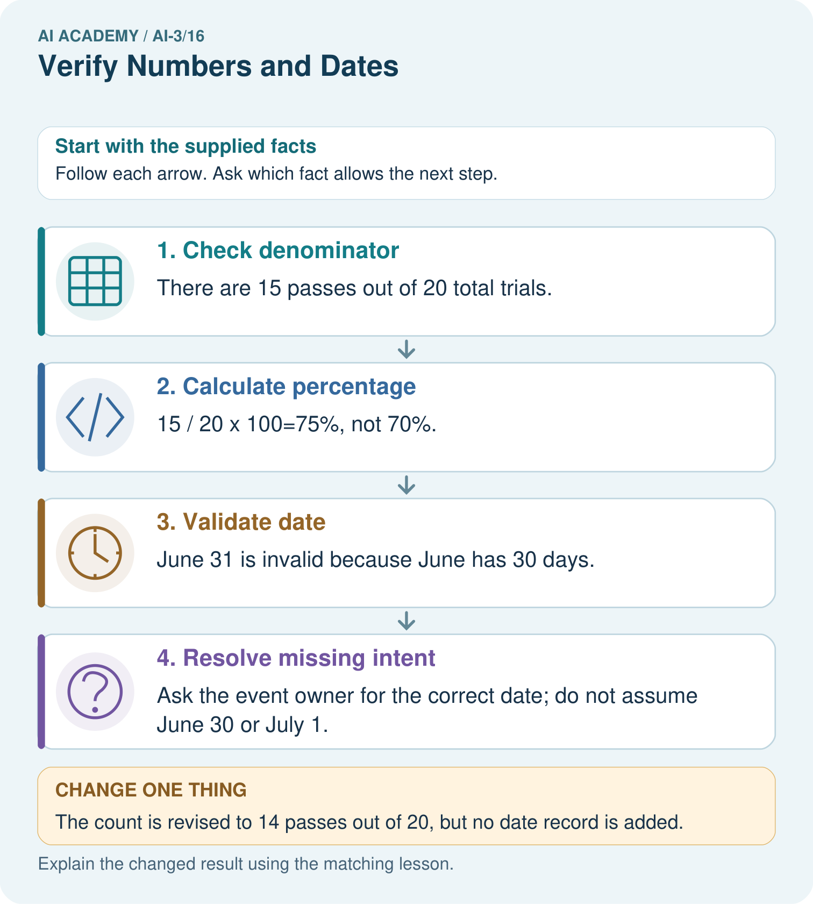
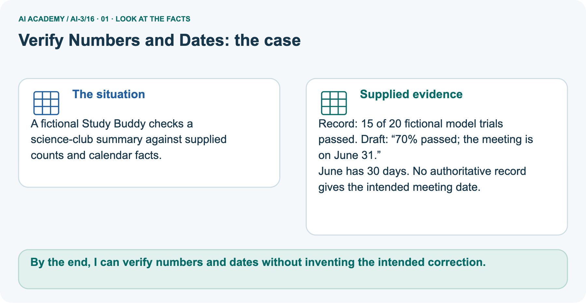
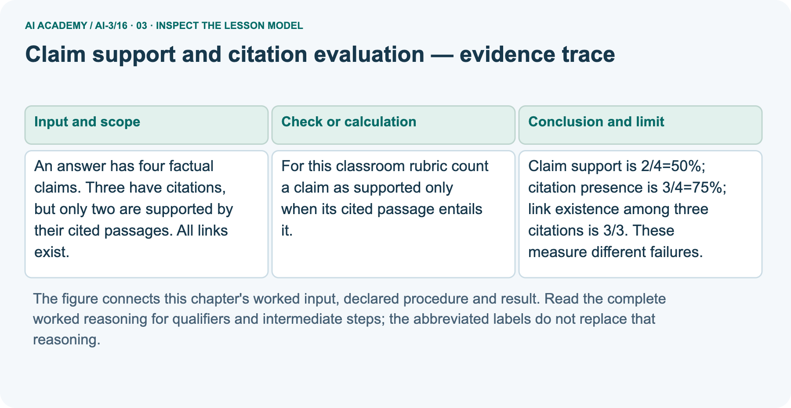
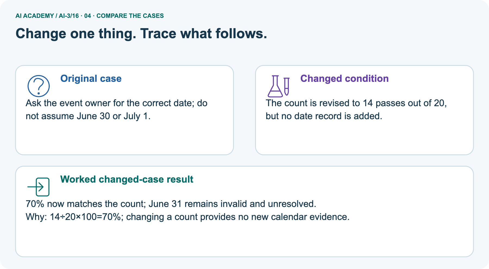
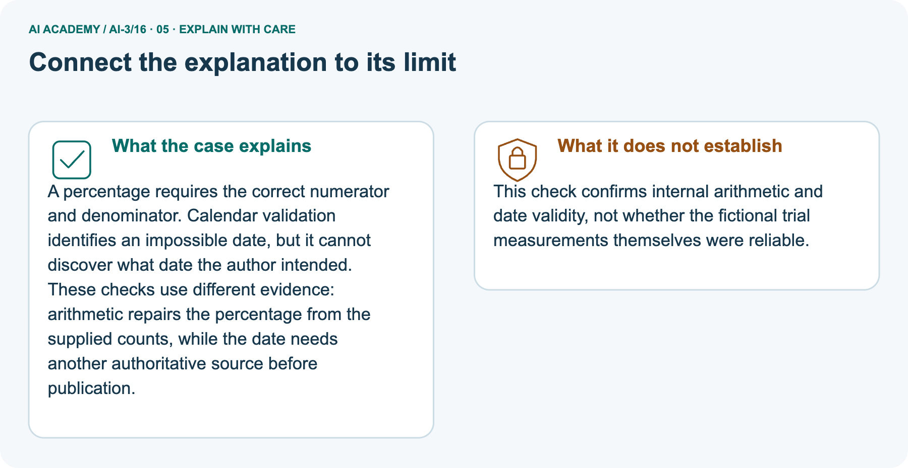
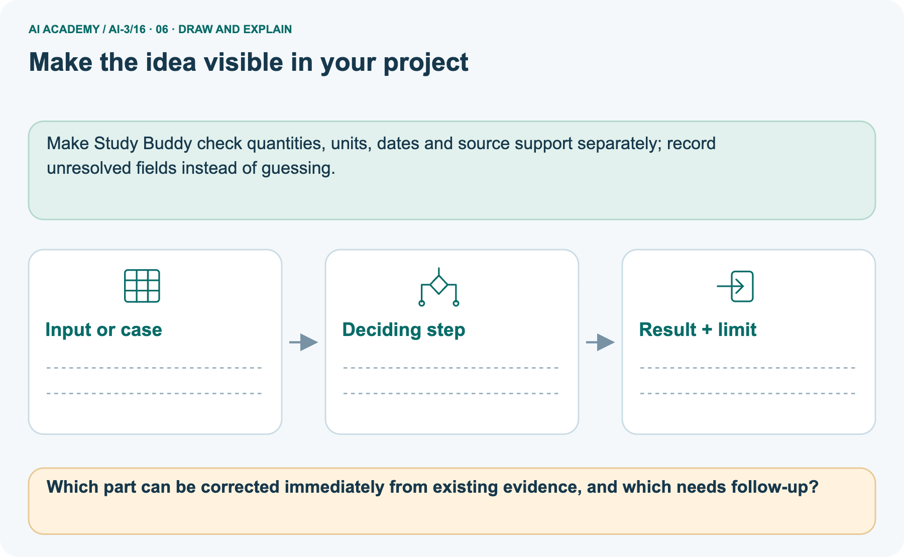

AI Academy · Level 3 · Grade 8 · Week 16 · Teacher guide
Verify Numbers and Dates
Learn to understand, design, build, test and explain AI systems responsibly.
Project: Verified Study Buddy
THE CONNECTED WEEK
Teach what each check can establish.
Model denominator and unit checks, distinguish calendar validity from intent, and assess an uncoached fresh case.
Keep one habit: Ask for the exact source, calculation trail and missing authority before accepting a correction.
Main lesson · Section 1
Prepare this connected week
Use one main plan and keep practice separate from the independent first attempt.
Learning goal and precision
Primary target: Verify a numeric claim using its source, denominator and units
Two 45-minute sessions. Citation evaluation checks source existence, exact passage support and coverage of answer claims. A real citation can still be irrelevant.
Use the supplied constructed scenarios to make the mechanism inspectable. Collect W4 before sharing solutions.
Students should name intermediate evidence and limitations; classroom pacing and learning effectiveness remain unvalidated.
By the end, I can verify numbers and dates without inventing the intended correction.
What to prepare
Use the supplied scenario, student illustrations and blank paper. For numeric work, offer counters or a calculator after learners show the setup. Fictional records are supplied; personal data and paid accounts are unnecessary.
Case exposure check: this source example appears in ai-2/29, ai-3/16. Reuse a familiar case for recall or modelling; verify that the case used to assess transfer has not already received feedback.
Lesson and workbook; paper and pencil
Calculator and optional local Python 3 for arithmetic; no live API or private data
Prepare the fresh retry separately and withhold its solution until after collection
Main teaching plan
| Session | Sequence and minutes | Resources |
|---|---|---|
| Session 1 · Understand · 45 min | 0–7: recall and prerequisite; 7–15: inspect the concrete case and predict; 15–30: teacher models the worked trace; 30–40: learners explain a step using the text and visual; 40–45: check the core idea. | Sections 1–6; record the brief recall in the workbook. |
| Session 2 · Practise · 45 min | 0–5: retrieve the procedure; 5–15: W2 completion practice; 15–23: explain and check with a partner; 23–30: each learner answers the misconception check; 30–40: targeted reteaching or a harder variation; 40–45: prepare the investigation. | Sections 7–10; use the matching workbook W2 and misconception check. |
| Session 3 · Investigate and transfer · 45 min | 0–5: retrieve the decision rule; 5–20: investigate or trace; 20–30: start the independent case; 30–38: connect the project; 38–43: act on feedback; 43–45: plan the return check. | Use “Run the investigation”, “Connect your project”, “Show what you know”, “Study a complete case” and “Try a new case independently”. Give extra time for the full task set. If this week has a coding lab, use its named section; section numbers can change when extra explanations are included. |
This is a starting allocation of 135 minutes, not a validated duration. Preserve all named topics. Schedule extra time for connected examples, the full investigation, independent cases and project building.
Repeated copies of a case share one recorded attempt; they are not new evidence.
Opening retrieval and readiness
Without opening the old lesson, explain one key idea from Source Quality. Give an example and a mistake that the idea helps you avoid.
Look for: Explain the mechanism and terminology of conflicting and time-sensitive sources
Reference example, not the only acceptable wording: Teacher explanation: Changing facts require a stated time and source-version policy. Current-looking records can conflict without enough evidence to choose between them.
For this toy task a signed amendment supersedes the referenced original from its effective time. Keep both records. A newer timestamp alone has no authority unless the policy grants it.
Without opening the old lesson, explain one key idea from Multimodal Evidence. Give an example and a mistake that the idea helps you avoid.
Look for: Keep visible evidence, hidden contents and caption claims separate
Reference example, not the only acceptable wording: Three reported visible pencils support a lower bound, not a verified total. Hidden contents remain unknown; a caption does not reveal them. Only the supplied new observation and complete-location scope support the changed total.
Without opening the old lesson, explain one key idea from Image Generation Models. Give an example and a mistake that the idea helps you avoid.
Look for: Explain the mechanism and terminology of image generation and provenance
Reference example, not the only acceptable wording: Teacher explanation: An image generator constructs an output from learned patterns and a specification. A generated picture is not a record that the depicted event occurred.
Keep a provenance record containing specification, tool/version when known, generation date, edits, permissions and intended use. Label fictional imagery.
Inspect visual requirements and avoid inferring identity or event authenticity from appearance.
A result depends on the inputs, procedure and conditions that produced it. Preserve data roles and distinguish observed outcomes from predictions or unmeasured conditions.
If the prior concept cannot be explained, use a short retrieval activity before this chapter.
Earlier wording, alternatives and picture transcripts
Teach the learning cycle
Retrieval answer guidance
Source Quality
Multimodal Evidence
Image Generation Models
Use the student module and workbook section with this exact week title. The worked case, independent question and answers below form one aligned lesson sequence.
What the learner must demonstrate
A report says 21/28=70% and gives February 30 as the deadline. Correct what can be computed and identify what must be checked externally.
Concept to explain
Precise values require direct evidence and recalculation.
| Term | Meaning |
|---|---|
| primary record | An original record directly relevant to a claim, rather than a later summary of it. |
| recalculate | Compute a quantity again from the original values or corrected inputs. |
| unit | An agreed amount used to express a measurement, such as centimetres or seconds. |
| as-of date | The date up to which a claim or record is stated to be current. |
Prepare the class
This compact option is not the full-week schedule. Use the main teaching cycle and allow extra sessions for the investigation, independent work and project.
Allow 80 minutes: recall 8; explanation 12; worked demonstration 15; guided practice 20; independent assessment 15; project and reflection 10. Extend the lab into a second session when needed.
Preparation for the connected explanation
Readiness answer
End goal for the pictorial case
This added worked case illustrates the week’s main idea. Retain all original and connected topics; schedule its practice within the teaching cycle.
Main lesson · Section 2
Teach source identity, arithmetic and calendar intent separately
Model the check that the supplied evidence can actually support.
Model the calculation and calendar limit
An answer says 15/20=80% and sets a deadline of February 30.
Verify both.
15/20=75%. February 30 is invalid in the Gregorian calendar. Check the intended deadline from its authority rather than guessing.
Use the complete verification checklist
| Check | Question to ask |
|---|---|
| Source and scope | Which record, run, population and time does the claim concern? |
| Numerator and denominator | What counts as a pass, and what total is used? |
| Units | Are quantities in compatible units before combining them? |
| Recalculation and rounding | Can I reproduce the exact fraction and stated rounding rule? |
| Calendar validity | Does this date exist in the stated calendar and year? |
| Intended date | Which responsible source actually states the event date? |
Read the 15/20 main record
A fictional Study Buddy checks a science-club summary against supplied counts and calendar facts.
Record: 15 of 20 fictional model trials passed. Draft: “70% passed; the meeting is on June 31.”
June has 30 days. No authoritative record gives the intended meeting date.
Trace each separate check


Read the picture one step at a time
A percentage requires the correct numerator and denominator. Calendar validation identifies an impossible date, but it cannot discover what date the author intended.
These checks use different evidence: arithmetic repairs the percentage from the supplied counts, while the date needs another authoritative source before publication.
Inspect the count grids

Predict the revised count
Change: The count is revised to 14 passes out of 20, but no date record is added.
Prediction: 70% now matches the count; June 31 remains invalid and unresolved.
Reason: 14÷20×100=70%; changing a count provides no new calendar evidence.
Name the measurement and intent limits
This check confirms internal arithmetic and date validity, not whether the fictional trial measurements themselves were reliable.
Cover the result. Ask learners to name the inputs and predict the next step. Uncover one step, connect the icon to the actual procedure, and explain its evidence. Then change the supplied condition and compare.
The picture is a representation; it does not document execution of a real AI model.
Earlier wording, alternatives and picture transcripts
Explain the mechanism
Input → Process → Output
Trace the information. At each stage, ask what changed and how you could test it.
Which stage could fail even when the other two are correct? Explain:
Predict first. Then check each step. A correct answer without visible reasoning is incomplete evidence.
1. Claim: 18 of 24 tests passed, reported as 80%.
2. Recalculate: 18 ÷ 24 = 0.75 = 75%.
3. Check denominator, unit, rounding, and source date.
4. Correct the claim and preserve the calculation trail.
Recalculate, retrace, or restate the reasoning in your own representation:
CHECK Did the evidence answer the exact question? Did the total, path, or source record stay consistent?
Concrete teaching case
Exact explanation to model
Explain the added worked example
Citation evaluation checks source existence, exact passage support and coverage of answer claims. A real citation can still be irrelevant.
Begin by writing the question the procedure is intended to answer. Identify the information already supplied, the information it will produce and the information still missing.
These are constructed classroom examples; they do not require live accounts, private records or an external service. Do not treat a plausible explanation as a measured outcome.
For this classroom rubric count a claim as supported only when its cited passage entails it. Separately count correct citation links. Use the number of factual claims as the support denominator.
Before applying the procedure, write its units, denominator or decision boundary where relevant. A partner should be able to repeat each step using the same inputs.
If a required input is absent or violates the stated contract, record that condition explicitly instead of quietly replacing it with a convenient value.
Key terms
| Term | Meaning |
|---|---|
| Entailment | Whether the cited passage supports the specific claim |
| Citation coverage | Which claims include source references |
| Link validity | Whether a source reference resolves to the intended record |
Model the reasoning aloud
Use the complete worked example below before asking learners to complete W2. Reveal a small part, invite a prediction, then explain the deciding step.
These teacher notes contain solutions; do not reveal the independent case answer during modelling.
An answer has four factual claims. Three have citations, but only two are supported by their cited passages. All links exist.
Claim support is 2/4=50%; citation presence is 3/4=75%; link existence among three citations is 3/3. These measure different failures.
Compare the intermediate evidence with the final statement. Explain why each number or decision follows from the stated inputs.
The conclusion belongs to this scenario and procedure; changing the inputs, evaluation population or authority can change what it establishes. Retain the raw record so a later revision can be compared honestly.
| Thinking move | Teacher prompt |
|---|---|
| Plan | What is given? What is the question? Which procedure fits these facts? |
| Do | Point to each input and intermediate step in the worked trace. Name the rule that allows the next step. |
| Check | Does the output answer the question? Which assumption or limitation prevents a larger claim? |
Use the diagram and verbal explanation together. Ask learners to match a sentence to a specific visual step; do not assign learners fixed visual or auditory learning styles.
A pictorial worked case: Verify Numbers and Dates
The facts we will use



Why this result follows
What this example does not establish
Change one thing in the pictured case
Ask while showing the picture
Main lesson · Section 3
Guide the checks, then remove help
Ask learners which claim each operation can establish.
Current completion task and key
Use the fictional record of 15 passes out of 20 trials and the draft 70%, meeting June 31. Show the fraction and percentage, state the supplied calendar fact, and separate the computable correction from the missing intended date. Then change only the count to 14 passes out of 20 and explain what changes and what remains unresolved.
15/20 × 100 = 75%. June has 30 days, so June 31 is invalid; no intended date is supplied. The revised count gives 14/20 × 100 = 70%. It provides no new date evidence. Check source identity and measurement reliability separately from arithmetic.
Individual evidence-boundary check
A calculator confirms 15/20 = 75%, and a calendar rejects June 31. Does this establish the real trial reliability and the intended meeting date? Explain the two remaining evidence gaps.
Neither measurement reliability nor intended meeting date follows from these tools. Recalculate from the source, reject the invalid date, and request the missing evidence.
Pictorial changed-case reasoning
Which part can be corrected immediately from existing evidence, and which needs follow-up?
Correct percentage to 75% in the original case. The intended date needs confirmation from the responsible event source.
Changed-case reasoning: 70% now matches the count; June 31 remains invalid and unresolved. 14÷20×100=70%; changing a count provides no new calendar evidence.
Collect each learner’s explanation before discussion. Use the first missing connection between input, deciding step and result to choose support. This question is worked-case practice, not fresh mastery evidence.
Keep each learner explaining
Ask: Which facts are given, and which would we have to assume? Learners mark relevant details before discussing answers.
Say: Predict first. Show the rule, information path or calculation that would produce the result. A correct guess is not yet an explanation.
In pairs, one learner solves while the other checks evidence; exchange roles. Remove the worked answer before independent assessment.
Earlier wording, alternatives and picture transcripts
Demonstrate and guide practice
Board sequence
Write the given facts: An answer says 15/20=80% and sets a deadline of February 30.
Write the question to explain: Verify both.
Reveal after predictions: 15/20=75%. February 30 is invalid in the Gregorian calendar. Check the intended deadline from its authority rather than guessing.
Use the earlier changed question as optional later practice. Reserve Audit a fresh learner percentage and deadline independently for the first independent attempt before hints or feedback.
Classroom dialogue
Reveal reasoning one step at a time. Explain why a tempting alternative fails. Write units and denominators for arithmetic, trace conditions for decisions, and identify supporting sources for claims.
Model these guided questions
Guided: Claim support is 2/4=50%; citation presence is 3/4=75%; link existence among three citations is 3/3. These measure different failures.
Qualification: Citation counts do not establish truth beyond the supplied sources or the correctness of uncited claims.
Exit: accept a concrete variation with its predicted outcome and a stated condition that would challenge the mechanism; reject a claim resting on unmeasured evidence.
Case-specific teaching sequence
| Stage | Teacher action |
|---|---|
| Session 1: 0–7 minutes | Retrieve the prerequisite; identify the input, procedure and evidence source. |
| 7–18 minutes | Explain section 1 and vocabulary. Complete W1 with a mechanism-based explanation. |
| 18–32 minutes | Trace the declared procedure and worked case. Complete W2, recording intermediate steps. |
| 32–45 minutes | Discuss the diagram with the worked input; use W3 to distinguish measured claims and limitations. |
| Session 2: 0–8 minutes | Retrieve the worked reasoning and collect the guided response before discussing it. |
| 8–20 minutes | Compare a proposed boundary variant with the original case; identify what remains fixed. |
| 20–35 minutes | Collect W4 independently. Require the procedure trace and the bounded conclusion. |
| 35–45 minutes | Use W5 and exit responses for feedback. Administer the fresh retry after feedback and preserve both attempts. |
Reduce help deliberately
Completion task: An answer has four factual claims. Three have citations, but only two are supported by their cited passages. All links exist. Show the intermediate steps and give the conclusion with its scope.
Teacher check: Teacher explanation: Claim support is 2/4=50%; citation presence is 3/4=75%; link existence among three citations is 3/3. These measure different failures.
Start by identifying the given inputs together. Leave the intermediate steps blank. If needed, model one step, then withdraw that help on the next step. Move to a full trace only when the partial trace is understood.
For partners, alternate explainer and checker; collect a response from every learner before discussion.
Individual reasoning check
Use the worked case for Claim support and citation evaluation. Proposed explanation: “The worked result establishes every future case”. Decide whether this explanation is supported.
Point to the step or supplied fact that decides; explain your repair if needed.
Expected correction: Citation counts do not establish truth beyond the supplied sources or the correctness of uncited claims.
Collect explanations, not only yes/no votes. If a misunderstanding is common, re-model the relevant step for the class.
If it affects a few learners, give a short targeted group explanation while others solve a more demanding variation.
Pictorial practice question
Reasoned teacher answer
Main lesson · Section 4
Run the six supplied verification cards
Provide all inputs and preserve unknowns.
Current cards and checked guidance
Six-card key: A 75%; B run A 70%, not run B’s 80%; C 2.5 km; D invalid June 31 with unknown intent; E valid 2026-06-30 supported by the supplied approved notice; F ambiguous slash format. Calendar validity does not authorise an event date. Independent task: 18/24 = 75%; April 31 invalid because April has 30 days; request the intended deadline.
Predict, check and record
Predict → Test → Record → Explain
Keep expected and actual results separate. Surprises are useful data when recorded honestly.
Audit the six supplied numeric and date cards. Check source identity, denominators, unit conversion, calendar validity and ambiguous formats. Record supported corrections and unresolved intent separately; these are fictional records, not live model results.
What did the hardest test teach you that the normal test did not?
Keep evidence and limitations
| Record | What to capture |
|---|---|
| Input or evidence | Exact data, instruction or claim |
| Expected result | Answer or safe fallback declared before the run |
| Observed result | Actual result, including errors |
| Explanation | Rule, calculation or evidence explaining the outcome |
| Next test | One justified change and a new prediction |
Respond to the first error
Current misconceptions: a calculator validates the source counts—ask how they were measured; any total is a valid denominator—match population and scope; add units as labels after arithmetic—convert first; the nearest valid date is the intended date—request the approved notice; a valid date is an authorised deadline—check source support; slash dates are universal—require a convention or clarification.
Use counted cells and a numerator/denominator frame before introducing harder variants.
Choose accessible support
| What the response shows | Next teaching action |
|---|---|
| Missing or misread facts | Read the case aloud, mark supplied versus unknown facts, and let the learner restate it. |
| Wrong procedure | Return to the deciding step in the worked case. Contrast it with the proposed incorrect explanation. |
| Arithmetic or implementation error | Trace intermediate values or lines; preserve the first mismatch and retry that step. |
| Correct result without a reason | Ask for a trace and a changed case before marking independent understanding. |
| An unsupported wider claim | Ask which supplied evidence supports the claim and which further observation would be needed. |
Offer an oral explanation, drawing, enlarged visual or fewer examples when that removes a reading/writing barrier. Keep the same reasoning goal.
Stretch secure learners by changing a boundary or assumption and asking them to defend the effect, not simply by assigning more of the same questions.
Earlier wording, alternatives and picture transcripts
Run the weekly evidence lab
Words You Can Use to Reason
A definition matters when you can recognize the idea, use it, and contrast it with a near-miss.
Make the lab runnable
Use the supplied investigation for shared practice. Keep predictions and observed paper-trace results separate. Reserve Audit a fresh learner percentage and deadline independently for the individual first attempt before feedback; do not use the reserved case as a paired lab task.
Diagnose and reteach
For guessing, return to given facts and request a trace. For vocabulary without application, use one example and one non-example. For arithmetic errors, check the setup before the calculation.
Finish with a different uncoached case before recording mastery.
Address these additional misconceptions
The worked result establishes every future case: Citation counts do not establish truth beyond the supplied sources or the correctness of uncited claims.
A missing input may be replaced without recording the change: A replacement changes the evidence or contract. Record the change and its justification; do not silently turn unknown into a measured value.
Repeating an assessed case is new independent evidence: A replay checks consistency. An example used for feedback or revision cannot later be described as untouched final evaluation.
Match the support to the first error
Main lesson · Section 5
Assess the selected learner percentage and deadline
Reveal this key after the first attempt.
Selected independent question and checked key
Selected case: A draft claims18 of24 learners is60%, and gives an April31 deadline. Check both statements without inventing a deadline.
18/24=75%. April has30 days, so April31 is invalid. Verify the intended date with an authoritative source rather than substituting April30 or May1.
Judge trace and scope
| Dimension | Evidence required |
|---|---|
| Explanation | Names the applicable idea or procedure and ties it to the supplied facts. |
| Trace and result | Preserves the given inputs and shows the relevant intermediate steps; distinguishes a prediction from an observed execution. |
| Limits | States the assumptions, missing evidence or conditions under which the result would change. |
Record each dimension as not yet, with support, or independent. Accept a valid alternative procedure with a defensible trace.
Do not penalise an honestly recorded model failure if the learner correctly explains its evidence and limits.
Give one repair action
Name the earliest unsupported step and give one action to repair it. Have the learner make that repair now and explain why. Then assess the relevant skill on a fresh, fully specified case.
Confirm it was not previously practised with feedback; solve and check the new case before assigning it. A follow-up design prompt is a starting brief, not automatically an equivalent test.
Current workbook guidance
Current W1: numerator 15, denominator 20, percentage 75%; source/run scope precedes calculation. W2: revised 14/20 = 70%; date remains invalid and intended date unknown. W3: internal calculation does not verify measurements; calendar invalidity does not identify an intended replacement. W5: accept a fully supplied variant with compatible units or an explicit missing-source boundary and a justified predicted result.
Keep the selected learner task independent.
Review · Earlier citation tasks and keys
W1 Explain the mechanism
Explain the weekly mechanism in your own words. Use the worked scenario to name its input, decision rule and output.
Teacher explanation: Citation evaluation checks source existence, exact passage support and coverage of answer claims. A real citation can still be irrelevant.
For this classroom rubric count a claim as supported only when its cited passage entails it. Separately count correct citation links. Use the number of factual claims as the support denominator.
W2 Trace the worked case
An answer has four factual claims. Three have citations, but only two are supported by their cited passages. All links exist. Show the intermediate steps and give the conclusion with its scope.
Teacher explanation: Claim support is 2/4=50%; citation presence is 3/4=75%; link existence among three citations is 3/3. These measure different failures.
W3 Audit the limit
A report omits this qualification: Citation counts do not establish truth beyond the supplied sources or the correctness of uncited claims.
Explain how omitting it could change a reader's interpretation, and write an accurate replacement.
Teacher explanation: Citation counts do not establish truth beyond the supplied sources or the correctness of uncited claims.
State the observed result separately from the unverified or out-of-scope claim; preserve the original evidence rather than inventing a missing fact.
W4 Apply a new case independently
Five claims; four cited; three supported by cited passages; one cited ID is nonexistent. Compute support and citation presence and explain link limits.
Teacher explanation: Support=3/5=60%; citation presence=4/5=80%. Link checks reject the nonexistent ID; remaining real links still need entailment checks.
W5 Design a revealing follow-up
For the worked scenario, propose one additional case that could reveal a failure, describe its expected outcome before running it, and explain what would need to remain fixed for a fair comparison.
Do not reuse W4 as a new final test after receiving feedback.
Teacher explanation: Accept a concrete variant of the worked input or a missing/conflicting/boundary condition, with an expectation derived from the declared procedure.
Require preserved settings, original outputs and data roles. Citation counts do not establish truth beyond the supplied sources or the correctness of uncited claims.
The new case should test this particular mechanism rather than merely restate the original result.
Earlier wording, alternatives and picture transcripts
Assess and explain the answers
Worked case answer
15/20=75%. February 30 is invalid in the Gregorian calendar. Check the intended deadline from its authority rather than guessing.
Additional transfer practice question
A report says 12 of 40 responses is 40%. Recalculate and state the correction with the denominator.
Reasoned practice answer
12 divided by 40 equals 0.30, or 30%. The correct statement is 12 of 40 responses, 30%.
What counts as evidence
| Criterion | 0 points | 1 point | 2 points |
|---|---|---|---|
| Result | Incorrect or absent | Partly correct | Correct with necessary conditions |
| Reasoning | No supporting trace | Some steps | Clear mechanism, calculation or source support |
| Limit | Overclaims certainty | Vague limitation | Relevant uncertainty or missing fact |
| Transfer | Copies without adapting | Adapts with prompts | Solves a changed case independently |
Use 6/8 as a classroom checkpoint, with 2 required for both Result and Reasoning. This is a proposed teaching rule, not a validated certification threshold.
Do not count a coached answer as independent mastery; correct unsafe or unsupported claims regardless of total.
Feedback
Ask the learner to find the evidence that challenges this claim: “A precise-looking percentage should be accepted without calculation.” Keep the first attempt and an uncoached retry separate.
Original transfer answer
21/28=3/4=75%. February 30 is not a valid Gregorian date, but the intended deadline must be checked in the responsible source. Do not guess February 28 or March 2 merely because the supplied date is invalid.
Explanations for the additional workbook examples
Assess independent transfer
Selected case answer
Feedback that the learner uses
Main lesson · Section 6
Connect, adapt and return
Retain the project evidence and revisit the reasoning on a changed case.
Project evidence to keep
Route arithmetic to a calculator and dates to direct sources before presenting them.
Keep the decision, input, result, explanation and remaining limitation in the project evidence record. Retrieve this record next week rather than restarting the project.
Make Study Buddy check quantities, units, dates and source support separately; record unresolved fields instead of guessing.
Support while preserving the reasoning goal
Provide one short approved passage; separate instruction, input, output and evidence. Stretch: introduce an unsupported claim or conflicting source and validate claim by claim with a fallback.
Provide an input/procedure/result/limit frame and a calculator when needed. Ask students to identify the first step before completing the whole trace.
Extension: compare two concrete variants of this mechanism while holding unrelated conditions fixed; report both successful and unsuccessful outcomes.
Selected independent task: 18/24 = 75%; April 31 is invalid because April has 30 days. The intended deadline needs the responsible source. Fresh retry: 24 of 32 passed, draft claims 80% and deadline November 31. Expected: 75%; November has 30 days, so the date is invalid; do not invent the intended deadline. Keep first attempts, hints and retries distinct. The retained citation task is additional practice.
Plan the delayed check
Suggested return points in this level: ai-3/17, ai-3/19, ai-3/22. Use actual classroom dates, adjusting for holidays and gaps. One, three and six teaching weeks are scheduling choices, not a claimed optimal spacing.
At a delayed check, ask for the idea from memory and a changed application. Compare with the earlier independent response and record support used.
For a new level, revisit the previous capstone before checking the new prerequisites.
| Record | Teacher evidence |
|---|---|
| Learner code and date | |
| Concept and case used; prior exposure | |
| Explanation / trace / limits | |
| Support and first repair | |
| Changed case and delayed outcome | |
| Next teaching action |
Use the evidence to choose reteaching or the next step. A completed page, confidence rating or attractive project does not by itself demonstrate understanding.
Bridge to next week
Ask for one decision the learner can now justify and one situation requiring more evidence or human review. Confidence ratings are separate from correct independent performance.
Next: Week 17: Model Memory vs Retrieval. Retrieve today’s evidence and identify what carries forward and what is new.
Next is Week 17: Model Memory vs Retrieval. Carry forward source identity, reproducible calculations and unresolved facts when deciding which evidence must be retrieved.
Earlier wording, alternatives and picture transcripts
Connect and extend learning
Verified Study Buddy
Support and stretch
Exit reflection
Bridge to the next week
Support and fresh reassessment
Plan the delayed return
Project evidence from this case
Reference bank and extra practice
Choose the reference that helps your next step.
Reference: alternative planning checklist
Reference · Section 7
Reference: alternative planning checklist
Use as a reminder alongside the main route rather than teaching the cycle twice.
Preparation and schedule
Teaching target: Explain the mechanism and terminology of claim support and citation evaluation
Prepare the labelled worked-case picture, the matching workbook, fictional input cards and a place for individual responses. No paid AI account is required for the paper reasoning activities.
| Session | Plan | Resources |
|---|---|---|
| Session 1 · Understand · 45 min | 0–7: recall and prerequisite; 7–15: inspect the concrete case and predict; 15–30: teacher models the worked trace; 30–40: learners explain a step using the text and visual; 40–45: check the core idea. | Sections 1–6; record the brief recall in the workbook. |
| Session 2 · Practise · 45 min | 0–5: retrieve the procedure; 5–15: W2 completion practice; 15–23: explain and check with a partner; 23–30: each learner answers the misconception check; 30–40: targeted reteaching or a harder variation; 40–45: prepare the investigation. | Sections 7–10; use the matching workbook W2 and misconception check. |
| Session 3 · Investigate and transfer · 45 min | 0–5: retrieve the decision rule; 5–20: investigate or trace; 20–30: start the independent case; 30–38: connect the project; 38–43: act on feedback; 43–45: plan the return check. | Use “Run the investigation”, “Connect your project”, “Show what you know”, “Study a complete case” and “Try a new case independently”. Give extra time for the full task set. If this week has a coding lab, use its named section; section numbers can change when extra explanations are included. |
Practice and assessment reminders
Before class, solve the supported practice: An answer has four factual claims. Three have citations, but only two are supported by their cited passages. All links exist.
Show the intermediate steps and give the conclusion with its scope.
Reasoned practice answer: Teacher explanation: Claim support is 2/4=50%; citation presence is 3/4=75%; link existence among three citations is 3/3. These measure different failures.
Check every learner before discussion: Use the worked case for Claim support and citation evaluation. Proposed explanation: “The worked result establishes every future case”. Decide whether this explanation is supported.
Point to the step or supplied fact that decides; explain your repair if needed.
Misconception repair: Citation counts do not establish truth beyond the supplied sources or the correctness of uncited claims.
Support: read the exact case aloud, enlarge the labelled picture, supply input cards and model only the first deciding step. Accept a spoken explanation or drawing; retain the reasoning goal.
Extension: The count is revised to 14 passes out of 20, but no date record is added. Require a prediction and a reason before comparing. Expected result: 70% now matches the count; June 31 remains invalid and unresolved.
Reason: 14÷20×100=70%; changing a count provides no new calendar evidence.
Independent assessment: withhold the reserved answer until the learner has attempted the new case. Record support separately from correctness.
| Criterion | Not yet | With support | Independent |
|---|---|---|---|
| Explanation | Names an answer without a deciding fact | Uses a hint to link fact and decision | Explains the deciding fact in own words |
| Trace or test | Cannot connect input and result | Completes steps with prompts | Traces or tests a changed case accurately |
| Limits and revision | Claims more than evidence supports | Names a limit after a prompt | States a defensible limit and useful next test |
Project checkpoint: Test changed cases. Keep normal, boundary and failure cases; compare expected and observed results.
Use the weekly teacher answer for topic-specific reasoning. A saved progress tick is an activity record; judge mastery from the learner’s explanation and evidence.
Reference: feedback and records
Reference · Section 8
Reference: feedback and records
Use digital tools where they help retain an explanation and its evidence.
Keep practice and independent evidence separate
Use the two formative questions as supported practice, not as independent mastery scores. Discuss the deciding evidence rather than accepting a guessed selection.
The feedback comes from the reviewed public worked case. Do not reveal the separately reserved independent teacher answer until the learner has attempted that case.
Repair and portfolio records
Use the earlier worked-explanation links to address a specific missing building block, then return to the current question. Adapt this suggestion after observing the learner; it is not an automatic diagnosis.
Collect the completed-work portfolio as evidence. Record support separately from correctness, and assess explanation, trace/test and limitations. Progress ticks and quiz selections alone do not establish mastery.
Earlier wording, alternatives and picture transcripts
This week has no code block. Use this routine when a later lesson includes an executable lab.
Ask students to predict before running code. Preserve errors and actual outputs; collect a changed test and an explanation. The branch-boundary and indexing lessons deliberately include failure cases.
Reference: teach with the six pictures
Reference · Section 9
Reference: teach with the six pictures
Choose the picture for the teaching move and connect it to the explanation.
01. Verify Numbers and Dates: the case



A fictional Study Buddy checks a science-club summary against supplied counts and calendar facts. Supplied facts: Record: 15 of 20 fictional model trials passed.
Draft: “70% passed; the meeting is on June 31.” June has 30 days. No authoritative record gives the intended meeting date.
Point to the given fact that matters most. Explain why it matters.
Teacher prompt: Point to the given fact that matters most. Explain why it matters. Ask learners to describe one label or arrow in ordinary words. Use the adjacent transcript if the image is difficult to see.
02. Follow the deciding steps
Check denominator: There are 15 passes out of 20 total trials. → Calculate percentage: 15÷20×100=75%, not 70%. → Validate date: June 31 is invalid because June has 30 days. → Resolve missing intent: Ask the event owner for the correct date; do not assume June 30 or July 1.
Point to each numbered stage and explain which recorded input it uses.
Teacher prompt: Point to each numbered stage and explain which recorded input it uses. Ask learners to describe one label or arrow in ordinary words. Use the adjacent transcript if the image is difficult to see.
03. Claim support and citation evaluation — evidence trace



Claim support and citation evaluation — evidence trace. An answer has four factual claims. Three have citations, but only two are supported by their cited passages.
All links exist. | For this classroom rubric count a claim as supported only when its cited passage entails it. | Claim support is 2/4=50%; citation presence is 3/4=75%; link existence among three citations is 3/3.
These measure different failures.
Read the labels and values. Explain the relationship the model shows.
Teacher prompt: Read the labels and values. Explain the relationship the model shows. Ask learners to describe one label or arrow in ordinary words. Use the adjacent transcript if the image is difficult to see.
04. Change one thing. Trace what follows.



Original case: Ask the event owner for the correct date; do not assume June 30 or July 1. Changed condition: The count is revised to 14 passes out of 20, but no date record is added.
Expected result: 70% now matches the count; June 31 remains invalid and unresolved. Reason: 14÷20×100=70%; changing a count provides no new calendar evidence.
Predict before checking the worked changed-case result. Name what changed and what the supplied facts allow you to conclude.
Teacher prompt: Predict before checking the worked changed-case result. Name what changed and what the supplied facts allow you to conclude. Ask learners to describe one label or arrow in ordinary words.
Use the adjacent transcript if the image is difficult to see. Changed-case reasoning: 14÷20×100=70%; changing a count provides no new calendar evidence.
05. Connect the explanation to its limit



A percentage requires the correct numerator and denominator. Calendar validation identifies an impossible date, but it cannot discover what date the author intended.
These checks use different evidence: arithmetic repairs the percentage from the supplied counts, while the date needs another authoritative source before publication.
Limit: This check confirms internal arithmetic and date validity, not whether the fictional trial measurements themselves were reliable.
Explain the case, then point to a limit on the claim.
Teacher prompt: Explain the case, then point to a limit on the claim. Ask learners to describe one label or arrow in ordinary words. Use the adjacent transcript if the image is difficult to see.
Keep the stated scope: This check confirms internal arithmetic and date validity, not whether the fictional trial measurements themselves were reliable.
06. Make the idea visible in your project



Make Study Buddy check quantities, units, dates and source support separately; record unresolved fields instead of guessing. Draw your input, deciding step, result and limit.
Supported question: Which part can be corrected immediately from existing evidence, and which needs follow-up?
Draw your project trace and justify the deciding step using evidence.
Teacher prompt: Draw your project trace and justify the deciding step using evidence. Ask learners to describe one label or arrow in ordinary words. Use the adjacent transcript if the image is difficult to see.
Supported practice key: Correct percentage to 75% in the original case. The intended date needs confirmation from the responsible event source.
Earlier wording, alternatives and picture transcripts
Use one picture at a time. Hide a worked result before asking for a prediction, then reveal it for feedback. These are supported teaching cases; retain the separate independent assessment for a fresh first attempt.